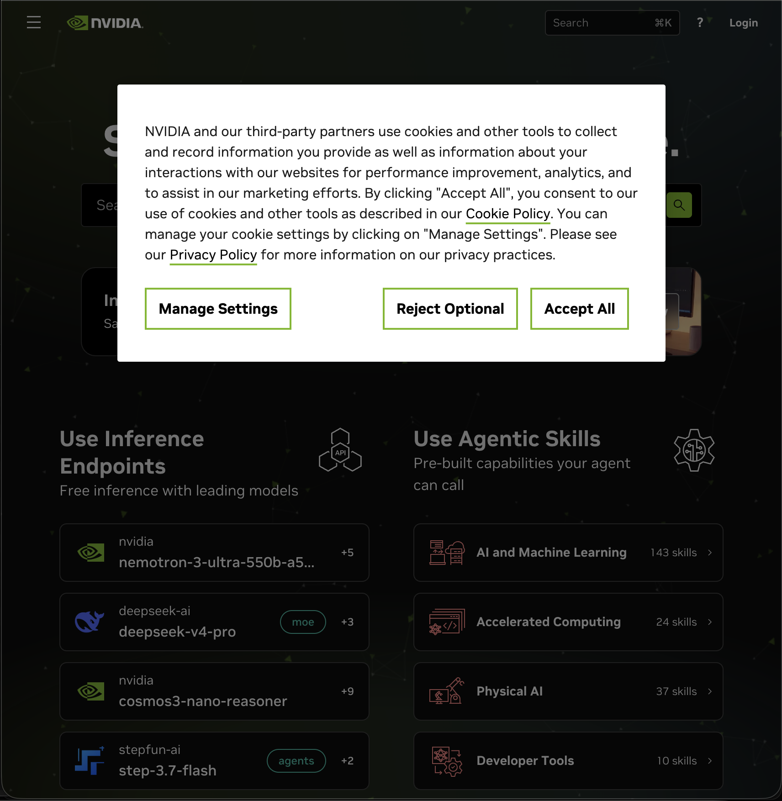
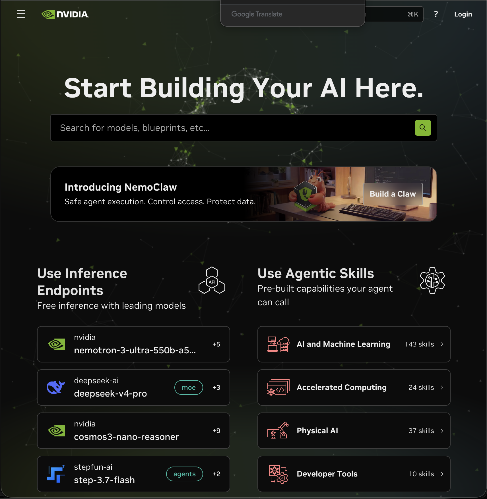
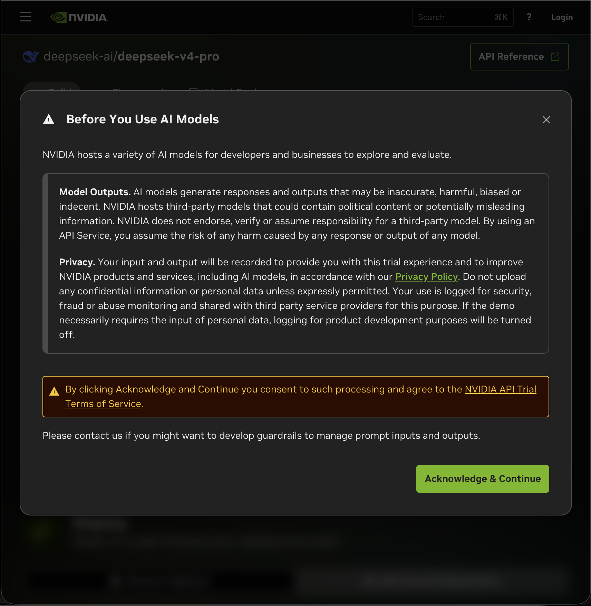
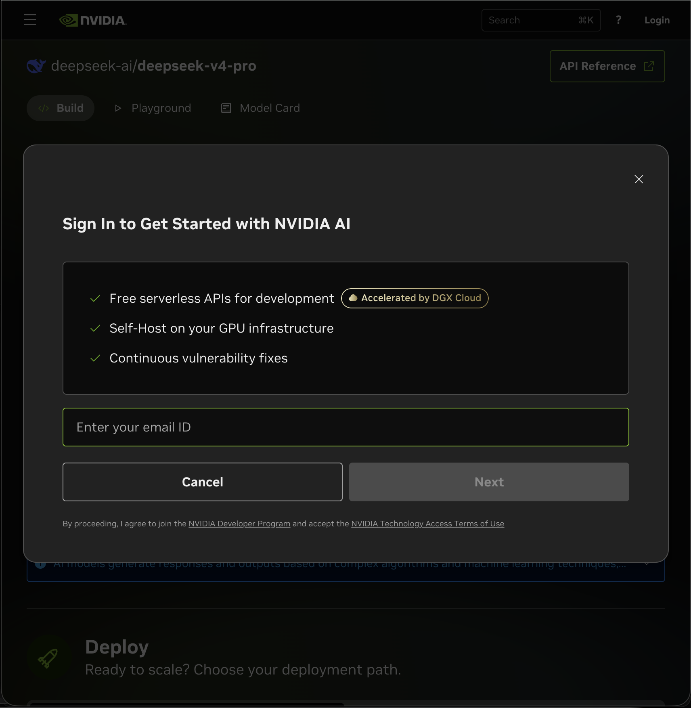
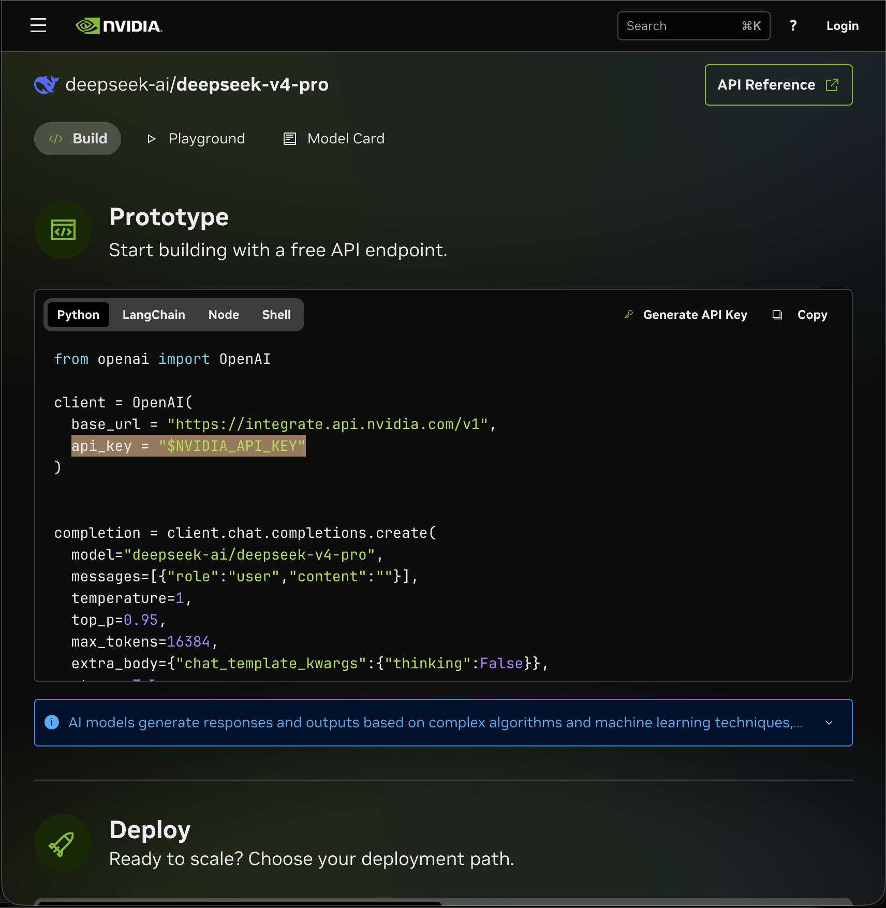
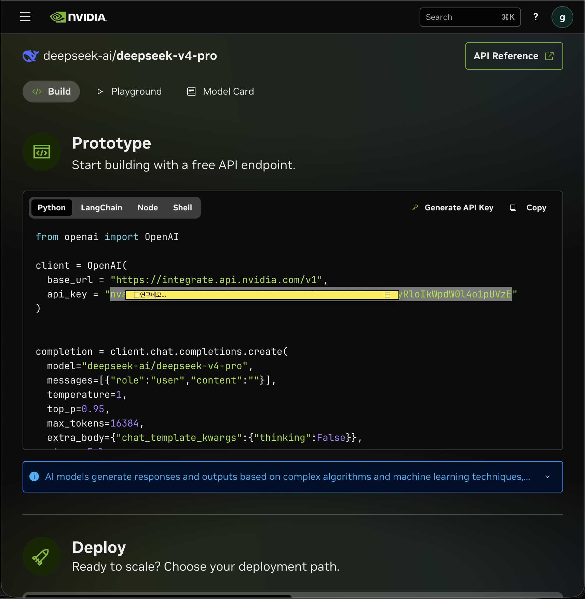

NVIDIA 무료 AI로 작동하는 연구설계 비서 · 완전 무료 · 5분이면 설치 끝
⬇ 다운로드 페이지 열기위 [다운로드 페이지 열기] 버튼을 누릅니다. (또는 위 주소를 브라우저에 붙여넣기)
화면 맨 위 Latest 라고 표시된 가장 최신 버전을 사용하면 됩니다.
Assets 목록에서 본인 운영체제(OS)에 맞는 파일 하나만 클릭해 받습니다.
ResearchChatbot-mac.zip
ResearchChatbot-windows.zip
※ Source code (zip / tar.gz)는 개발용입니다 — 받지 않아도 됩니다.
받은 .zip 파일을 더블클릭하면 압축이 풀립니다.
보통 다운로드 폴더에 풀립니다. 안에 실행 파일이 들어 있습니다.
압축 푼 ResearchChatbot.app 을
우클릭 → 열기 → 열기
⚠️ "확인되지 않은 개발자" 경고가 떠도 정상입니다. (처음 한 번만 우클릭 열기)
폴더 안 ResearchChatbot.exe 더블클릭
경고 시 추가 정보 → 실행
⚠️ "Windows의 PC 보호" 경고가 떠도 정상입니다. (처음 한 번만)
처음 실행하면 키 입력 화면이 나옵니다. 아래 순서로 무료 키를 받아 붙여넣으세요.






상단 모드 버튼으로 연구설계 · 초안검토 · 자유문답을 전환하고, 📎로 초안 파일을 첨부해 검토받을 수 있습니다.
새 버전이 나오면 앱 상단에 알림이 떠요. 그때 다시 다운로드 페이지에서 받으면 됩니다 (이전 대화·키는 그대로 유지).